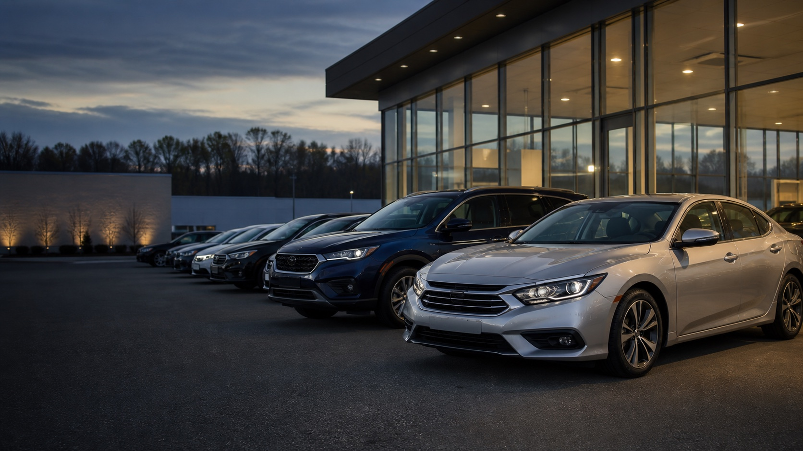
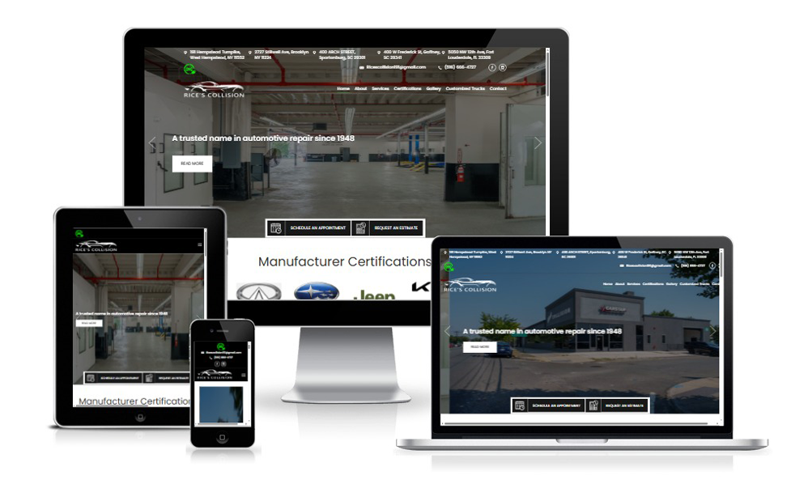

A website that earns trust.
Clear service pages, genuine shop imagery, business credentials, and easy mobile calls and estimate requests.
Industries / Automotive & Auto Body
Websites and digital marketing that help repair shops, collision centers, and dealerships turn local attention into the next conversation.
Let’s Build Your Growth Plan ↗
We understand the decision
They may be dealing with an accident, a warning light, or a vehicle they need to replace. Their questions are practical. Can you help? Are you nearby? Can they trust you?
Your website and marketing should meet that moment: show the work, explain the service, and make it easy to call, book, or request an estimate.
We connect the discovery journey with the real-world action your business needs.
A connected marketing approach
Clear service pages, genuine shop imagery, business credentials, and easy mobile calls and estimate requests.
Local SEO, Google Business Profile support, and location content built around your services and market.
Search advertising connected to focused landing pages for repair, collision, inventory, or specialty services.
Track calls, forms, and appointment requests by source, so the next decision starts with useful information.

Relevant work / Rice’s Collision
A digital experience focused on repair confidence, local discovery, and a clearer estimate journey.
Explore the Case Study ↗How we work
Understand your market, services, and customer journey.
Set priorities around your business and best opportunities.
Bring the website, messaging, and campaigns together.
Connect the experience and check the paths to contact.
Use reporting to guide the next round of refinements.
Good questions. Clear answers.
We start by reviewing the current experience, platform, and business priorities. The right scope may be focused improvements, new landing pages, or a broader redesign.
A clear service offer, the area you serve, authentic imagery, relevant credentials, answers to common questions, and a prominent way to call or request an estimate.
They can support different parts of the same journey. Local search builds discoverability, while targeted campaigns bring attention to specific services and offers.
Start with meaningful actions: calls, estimate requests, forms, and appointments. Where business systems allow, connect those actions to booked work and revenue.
Your next chapter
Tell us where you are. We’ll help you see what comes next.
Let’s Talk About Your Project ↗